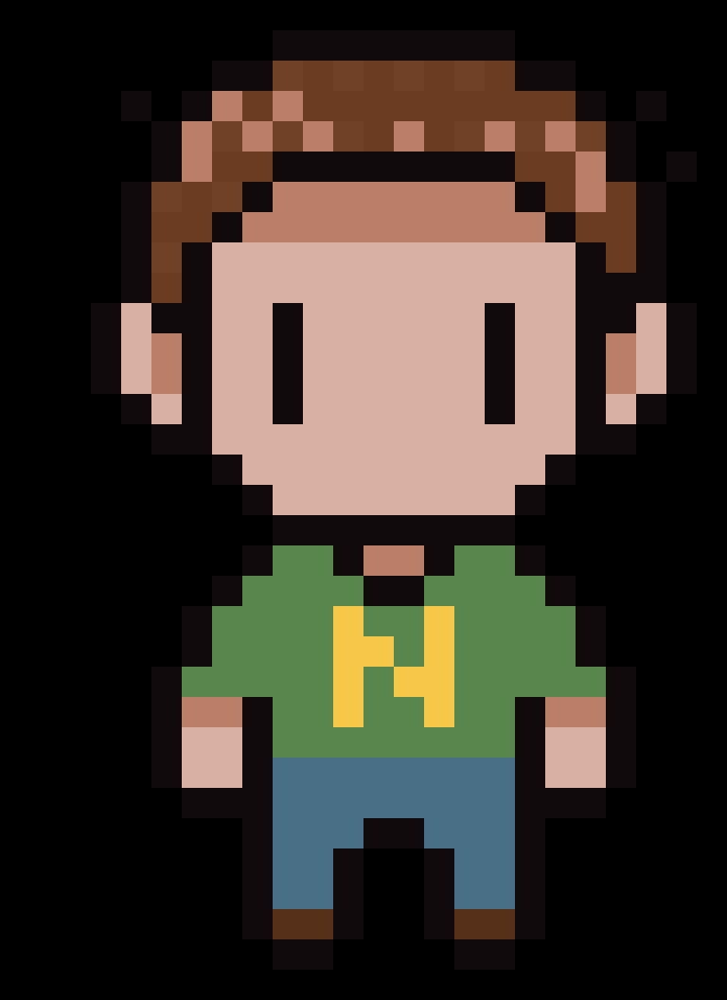
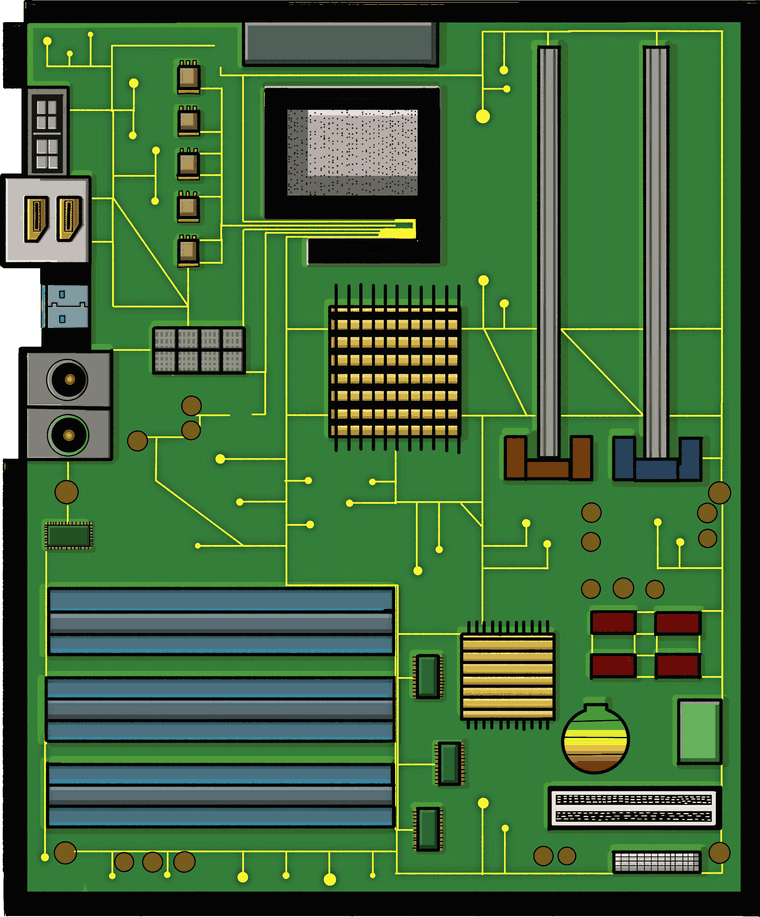

Escape the
Computer
↓ Scrollen
02 · Die Hauptfigur
Das ist Nibble.
Nibble ist klein, aber mutig. Sein Name kommt aus der Informatik: Ein Nibble ist ein halbes Byte, also genau 4 Bit.
Und genau daraus besteht er. Seine vier Bits sind gleichzeitig seine vier Leben.

03 · Die Spielwelt
Plötzlich ist Nibble mittendrin.
Nibble fällt mitten auf ein Motherboard. Überall Leiterbahnen, Chips und Anschlüsse. Doch alles ist still, blass und leblos: kein Ton, kaum Farbe.
Nibble will nur eines: hier raus.

04 · Die Reise
Sechs Stationen bis zur Freiheit.
Um zu entkommen, muss Nibble die Bauteile des Computers wecken, eines nach dem anderen. Jede Station stellt ihm eine Aufgabe.
Die erste wartet schon: der Kopfhörer-Anschluss.
- Kopfhörer
- CPU
- RAM 1
- Grafikkarte
- RAM 2
- USB
05 · Die Aufgabe
Ein Minispiel. Eine Frage.
An jeder Station muss Nibble ein kleines Minispiel schaffen und eine Frage zur Hardware beantworten. Erst dann erwacht das Bauteil.
Mit jeder gelösten Station wird der Computer lebendiger: Erst kommt der Ton zurück, später leuchten die Farben.
Welche Farbe hat der Anschluss für Kopfhörer?
06 · Die Gefahr
Die CPU erwacht, und mit ihr die Bits.
Ab jetzt schickt die CPU Nullen und Einsen über die Leiterbahnen. Trifft eines davon Nibble, verliert er ein Bit.
Doch Nibble wehrt sich: Er wirft das Gegenstück und löscht das Bit aus, bevor es ihn erwischt.
07 · Die Flucht
Der Weg nach draußen.
Alle Stationen sind wach, der Computer leuchtet und klingt. Jetzt fehlt nur noch der Ausgang.
Ein USB-Kabel wird eingesteckt, und Nibble nutzt seine Chance.
08 · Geschafft
Nibble druckt sich selbst aus.
Am Ende landet Nibble auf Papier, zusammen mit allem, was er unterwegs gelernt hat: alle Fragen und Antworten zum Nachlesen.
Ist ein Drucker angeschlossen, kommt das Blatt direkt heraus. Sonst bleibt es als PDF.
I escaped the computer! Juhu!
Das habe ich gelernt